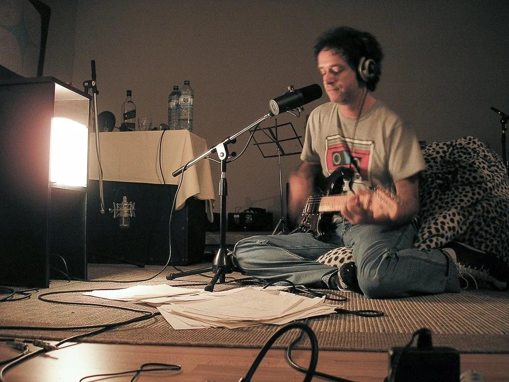
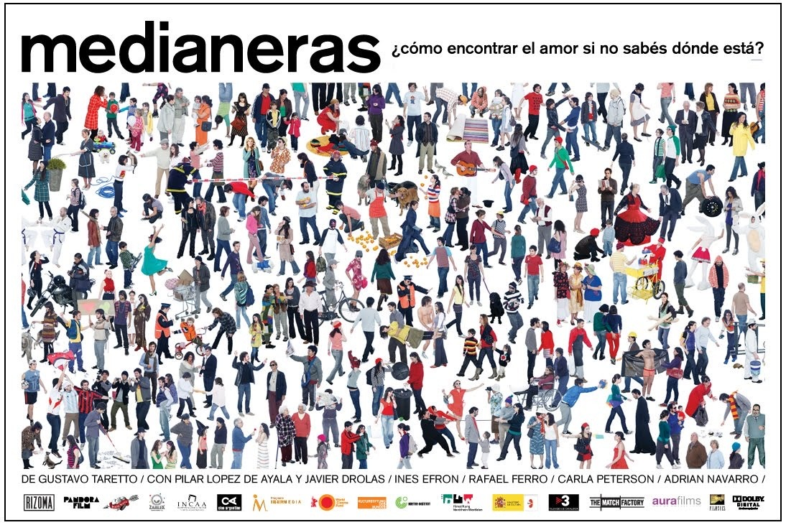

Encolumnado sin Tablas
Texto 1
Sentir hasta resistir... El karma de vivir al sur. Sentir hasta resistir... El karma de vivir sin luz. Yo se que un día ya no habrá perdón, yo se que un día no habrá confusión. Porque si confías en mí, todo estará siempre... Me vas a hacer feliz... (vas a matarme con tu forma de ser).
El Karma de Vivir al Sur - Charly García

Texto 2
I'm the next act waiting in the wings. I'm an animal trapped in your hot car. I am all the days that you choose to ignore. You are all I need. You're all I need. I'm in the middle of your picture. Lying in the reeds. I am a moth who just wants to share your light. I'm just an insect trying to get out of the night. I only stick with you because there are no others. You are all I need. You're all I need. I'm in the middle of your picture. Lying in the reeds. It's all wrong, it's all wrong, it's all wrong. It's alright, it's alright, it's alright. It's all wrong, it's alright. It's alright, it's alright.
All I Need - Radiohead
Texto 3
"I've gone where the universe takes me my whole life. It's better to make those decisions for yourself."

Texto 4
Conocer la otra mitad es poco, comprender que solo estar es más puro... Me pondré el uniforme de piel humana, No esperaba tanto resplandor... El fin de amar, sentirse más vivo...
Texto 5
Por aquello que encontré en tus ojos, por aquello que perdí en la lucha...
Vivo - Gustavo Cerati

Texto 6
"Should we just watch one sunset? Or live just one day? Because it's new every time. Each time is a different experiencie."

Texto 7
"Los edificios, como casi todas las cosas hechas por el hombre están hechas para que nos diferenciemos los unos de los otros. Existe un frente y un contrafrente. Están los pisos altos y los bajos. Qué se puede esperar de una ciudad que le da la espalda a su río."
Texto 8
"Observar es estar y no estar, o tal vez estar de una manera distinta."
